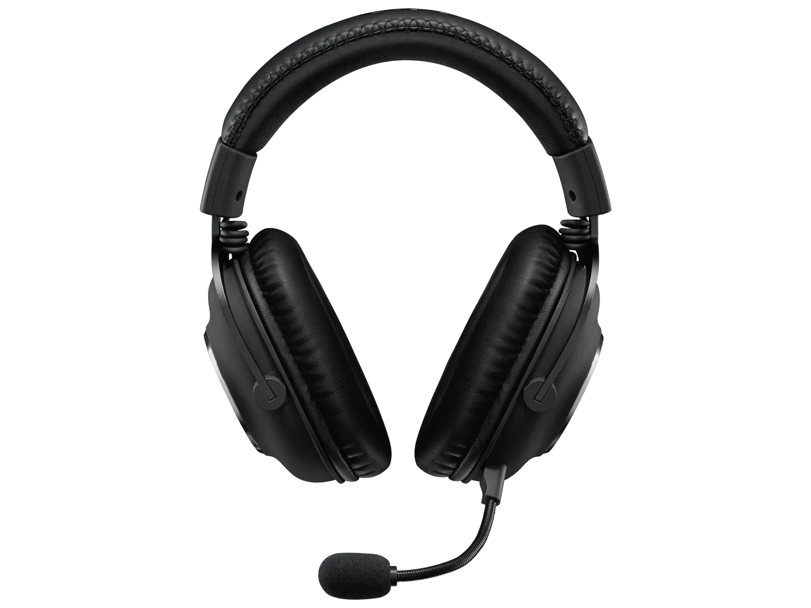

| Kurang dari 63 gram.Low-latency LIGHTSPEED wireless terbaik. Presisi tingkat tinggi dengan sensor HERO 25K.
Singkirkan semua rintangan dengan mouse PRO kami yang paling ringan dan paling cepat ini. |
| Berdasarkan banyaknya gamer profesional yang menggunakan mouse G Pro Superlight dari Logitech, Logitech jelas memiliki sesuatu yang cocok dengan seri Superlight mereka. Utas itu jelas meningkat pada mouse Superlight 2.
Namun, ia hadir dengan harga yang lumayan, sebagai salah satu mouse termahal di pasaran saat ini. Artinya, Anda, sebagai gamer fana biasa, harus menilai apakah menurut Anda itu sepadan dengan harganya.
Saya yakin bahwa di arena profesional, detail kecil seperti pengaturan DPI yang cermat, latensi, tingkat polling, dll. dapat menggerakkan 3% terakhir yang dapat menjadi pembeda antara kemenangan dan kekalahan. |


| Keyboard gaming wireless tepercaya untuk kejuaraan yang dirancang untuk kompetisi level tertinggi. Didesain bersama pemain pro, dibuat untuk menang. |

| G512 adalah gaming keyboard berkinerja tinggi yang dilengkapi pilihan switch mechanical GX terbaik.
Teknologi gaming terbaik dan bodi aluminum-alloy menjadikan G512 sebagai keyboard yang sederhana, awet, dan berfitur lengkap. |


| Tahan lama dengan kinerja kelas gaming. Keyswitch Tactile Mech-Dome sudah tahan tumpahan.
Pencahayaan LIGHTSYNC RGB yang dapat dikustomisasi Palm rest terintegrasi dan alas yang dapat disesuaikan.
Kontrol media khusus.G213 gaming keyboard dilengkapi dengan tombol Logitech Mech-Dome yang secara khusus disetel untuk memberikan respons tactile yang superior dan profil kinerja keseluruhan yang mirip dengan keyboard mechanical.
Tombol Mech-Dome berbentuk tegak, yang memberikan jarak laluan penuh sebesar 4 mm, kekuatan aktuasi sebesar 50 g, dan pengoperasian yang tidak berisik. |

| TDidesain dengan para pemain pro. Dibuat untuk menang. Headset PRO X 2 LIGHTSPEED memiliki audio standar pro, LIGHTSPEED wireless, dan sangat nyaman untuk digunakan saat berkompetisi di level tertinggi.
Kamu bisa mendengar setiap langkah kaki, aksi, dan tarikan pin berkat soundscape memukau yang dimungkinkan oleh driver graphene. |


| Dari Aurora Collection, G735 memaksimalkan kenyamanan dan kecocokan untuk semua gamer termasuk gamer dengan ukuran kepala lebih kecil.
Bermain nyaman dengan headband yang sangat lembut dan ear cup yang bisa diputar. Sempurna untuk PC dan perangkat seluler dengan LIGHTSPEED dan Bluetooth® wireless.
Hadir dalam corak White Mist.
Aksesori bercorak warna dijual terpisah. |


| Didesain bersama dan untuk pemain pro. 7.1 surround sound generasi terbaru dan driver PRO-G 50 mm memastikan audio gaming premium.
Mikrofon terdengar menakjubkan dengan sound card USB eksternal yang dilengkapi filter broadcast Blue VO!CE. |
PROFILE
NAMA : Weymar Azi Nugraha
NIM : 10123291
KELAS: IF-7
| | | | | | | | |